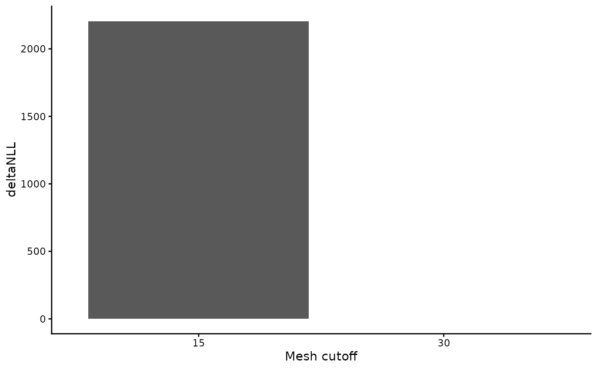

Compares alternative mesh resolutions for an sdmTMB model using spatial
block cross-validation. Spatial folds are created with
blockCV::cv_spatial() and each mesh is evaluated with
sdmTMB::sdmTMB_cv() using the same folds, so that predictive performance
(sum of hold-out log-likelihoods and AIC) can be compared on an equal
footing.
This is a parameterised version of an exploratory workflow: all model
settings are inherited from the fitted object, and nothing about the data
is assumed beyond the coordinate and response columns.
Usage
sdmTMB_mesh_cv(
object,
mesh_cutoffs,
k = 3,
block_size = NULL,
response = NULL,
xy_cols = c("X", "Y"),
coord_multiplier = 1000,
object_crs = NULL,
control = NULL,
n_workers = 1,
future_seed = TRUE,
silent = TRUE
)Arguments
- object
A fitted
sdmTMB::sdmTMB()model. Model settings (formula, family, spatial and spatiotemporal structure, time column) are inherited.- mesh_cutoffs
Numeric vector of mesh cutoff values to compare.
- k
Integer. Number of cross-validation folds. Default
3.- block_size
Numeric. Spatial block size in CRS units (e.g. metres). If
NULL(default) a heuristic based on the data extent is used.- response
Character. Name of the response column used to build presence/absence blocks for
blockCV::cv_spatial(). IfNULL(default), taken from the model formula's left-hand side.- xy_cols
Character vector of the coordinate columns. Default
c("X", "Y").- coord_multiplier
Numeric factor to convert
xy_colsto CRS units. Default1000.- object_crs
Coordinate reference system. If
NULL, taken from the model mesh.- control
An
sdmTMB::sdmTMBcontrol()object for the CV fits. IfNULL, inherited fromobject.- n_workers
Integer. Number of parallel workers. Default
1.- future_seed
Logical or integer. Future-compatible random seed.
- silent
Logical. Suppress fitting output? Default
TRUE.
Value
A data frame (tibble) of class sdmTMB_mesh_cv with one row per
cutoff: cutoff, crashed, converged, sanity, sum_loglik (the
summed hold-out log-likelihood from sdmTMB::sdmTMB_cv(); higher is
better), mean_aic, and the derived deltaNLL, deltaNLL_pr,
deltaAIC, deltaAIC_pr. deltaNLL/deltaAIC are relative to the
best-fitting cutoff (0 = best; lower is better, mirroring AIC). The
list of sdmTMB::sdmTMB_cv() objects is attached as the "cv"
attribute.
Examples
# \donttest{
# Requires the 'blockCV' package.
mesh <- sdmTMB::make_mesh(sdmTMB::pcod, c("X", "Y"), cutoff = 20)
fit <- sdmTMB::sdmTMB(
data = sdmTMB::pcod, formula = density ~ 0 + as.factor(year),
time = "year", mesh = mesh, family = sdmTMB::tweedie(link = "log")
)
cv <- sdmTMB_mesh_cv(fit, mesh_cutoffs = c(15, 30), k = 3)
#> Running fits with `future.apply()`.
#> Set a parallel `future::plan()` to use parallel processing.
#> Running fits with `future.apply()`.
#> Set a parallel `future::plan()` to use parallel processing.
#> ℹ `ln_tau_O` is an internal parameter affecting `sigma_O`
#> ℹ `sigma_O` is the spatial standard deviation
#> ℹ `ln_tau_E` is an internal parameter affecting `sigma_E`
#> ℹ `sigma_E` is the spatiotemporal standard deviation
#> ℹ `ln_kappa` is an internal parameter affecting `range`
#> ℹ `range` is the distance at which data are effectively independent
#> ℹ `ln_tau_O` is an internal parameter affecting `sigma_O`
#> ℹ `sigma_O` is the spatial standard deviation
#> ℹ `ln_tau_E` is an internal parameter affecting `sigma_E`
#> ℹ `sigma_E` is the spatiotemporal standard deviation
#> ℹ `ln_kappa` is an internal parameter affecting `range`
#> ℹ `range` is the distance at which data are effectively independent
#> ℹ `ln_tau_O` is an internal parameter affecting `sigma_O`
#> ℹ `sigma_O` is the spatial standard deviation
#> ℹ `ln_tau_E` is an internal parameter affecting `sigma_E`
#> ℹ `sigma_E` is the spatiotemporal standard deviation
#> ℹ `ln_kappa` is an internal parameter affecting `range`
#> ℹ `range` is the distance at which data are effectively independent
cv
#> # A tibble: 2 × 10
#> cutoff crashed converged sanity sum_loglik mean_aic deltaNLL deltaNLL_pr
#> <int> <lgl> <lgl> <lgl> <dbl> <dbl> <dbl> <dbl>
#> 1 30 FALSE TRUE FALSE -7613. 8781. 0 0
#> 2 15 FALSE TRUE TRUE -9819. 8644. 2206. 29.0
#> # ℹ 2 more variables: deltaAIC <dbl>, deltaAIC_pr <dbl>
plot(cv)

# }